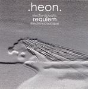

| Artist: | Heon |
| Title: | Electro-acoustic Requiem |
| Label: | Unicorn Records UNCR-5007 |
| Length(s): | 40 minutes |
| Year(s) of release: | 2003 |
| Month of review: | [01/2004] |
| 1) | Death | 3.59 |
| 2) | Reaching The Sky | 2.27 |
| 3) | Amazed By Beauty | 2.50 |
| 4) | Melancholy | 2.45 |
| 5) | Purgatory | 2.28 |
| 6) | The Trial | 2.41 |
| 7) | The Verdict | 3.10 |
| 8) | The Punishment | 2.40 |
| 9) | Hell | 3.54 |
| 10) | Absolution Of The Sins | 3.27 |
| 11) | Heaven | 2.51 |
| 12) | Back To Life | 6.37 |
Reaching The Sky is more ethereal and experimental, not melodious or anything, it reminds me strongly of Eddie Jobson's Theme Of Secrets when that is least melodic. Amazed By Beauty by contrast is very melodic. There are different things going on: a trainlike chugging, and a very melodic main theme, a bit melancholic. The end effect is a soothing one.
Melancholy brings us to a late nite jazz bar, veerry moody and slow. The guitar is also used as a upright bass here. Also in these moments when every detail can be heard, the playing is impeccable.
Purgatory is back to the modern day and age, with what amounts to samples being played through guitar (or simply by post processing). The playing goes faster and faster here, the guitar player turning manic. The Trial is a high-pitched version of Amazed By Beauty. Again, the rhythmic chugging support over which this time a high pitched melody hovers. There are also soothing sides to this song.
The Verdict is at once a bouncy tune with programmed rhythms, but also features quite a few harrowing Frippian lines. The Punishment is thematically going back to the opener. Slower and not so friendly, the song has like many of its predecessors a repetitivee feel.
As you might expect, Hell is a not a friendly place to be. Driving effects, urgent rhythm guitar sounds, many of these sounding as if surfacing for only a while to be submersed soon after. With Absolution Of The Sins we return to rhythm territory. This gives the album a quite modern air. Here we also hear acoustic strummings between the electric lead line. Kind of a bobbing affair.
Heaven is more classically styled, a bit Bach like if you want. The melody already seems somewhat familiar, but everything is played in a relaxed, middle of summer way. Sunny and soothing. The ending is quite manic. Strange.
The final track is Back To Life, which is the longest one on this album. This is a spooky affair, is this how we are born? Hmm, I guess these are the sounds of everyday life, the noise that is. Cars tooting their horn and such. A rather scary one after the foregoing. We end with a lullabye though.